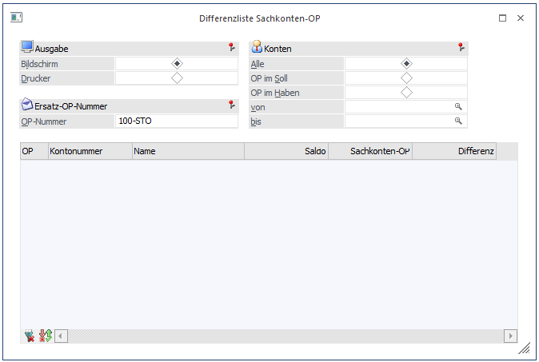

Die Differenzliste weist sämtliche Sachkonten aus, bei denen ein Unterschied zwischen dem FIBU-Saldo und dem Sachkonten-OP Saldo besteht.
Eine Differenz zwischen FIBU und der Sachkonten-OP kann nur vorkommen, wenn das Sachkonto bereits bebucht war und dieses erst nachträglich als Sachkonten-OP führendes Konto definiert wurde.
Die Differenzliste kann über den Menüpunkt
1 Auswertungen
1 Offene Posten
1 Differenzliste Sachkonten-OP
abgerufen werden.

Ø Ausgabe
Hier kann gesteuert werden, ob die Liste am Bildschirm oder am Drucker ausgegeben werden soll.
Ø Konten
Mittels Radio-Buttons kann grundsätzlich gewählt werden, ob alle OP-führenden Sachkonten angezeigt werden sollten, oder nur jene, die entweder OPs im Soll oder im Haben führen.
Über die Felder von/bis kann eine weitere Einschränkung auf einen Kontenbereich erfolgen.
Ø Ersatz-OP-Nummer
In diesem Feld wird eine Ersatz-OP-Nummer vorgeschlagen, die für die Differenz-OP verwendet wird. Diese OP-Nummer kann natürlich noch manuell editiert werden.
Ø Anzeige aller Differenzen in der Tabelle
Durch Anklicken des Anzeigen-Buttons werden alle Konten, die eine Differenz aufweisen - und den Selektionskriterien entsprechen - angezeigt. Dabei wird neben der Kontonummer und dem Kontonamen auch noch der FIBU-Saldo, der Sachkonten-OP-Saldo und die Differenz ausgewiesen.
Ø Erstellen einer Sachkonten-OP
Wenn die Checkbox "OP" vor einer Kontonummer aktiviert wird, kann für dieses Konto über die Differenz ein neuer Sachkonten-OP erzeugt werden.